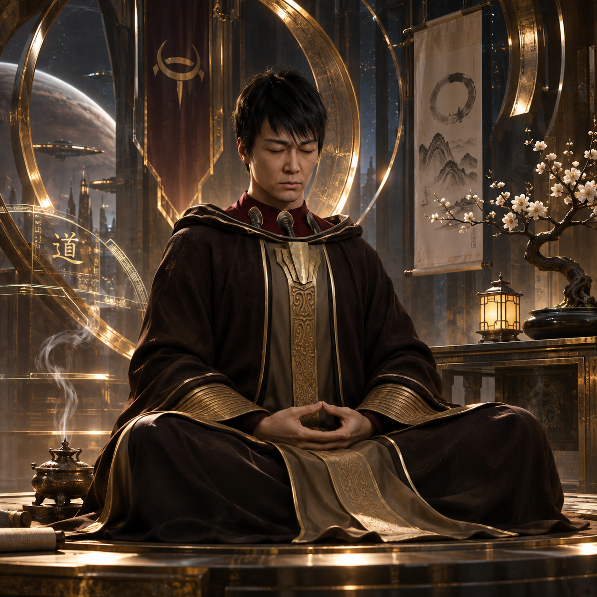

S
·
Home
Biography
The Way
Ships
Chronicles
Gallery
PERSONAL ARCHIVE
05 / VISUAL RECORD
GALLERY
Fragments of Seiryun's presence.
THE ROGUE CULTIVATOR
Portrait

THE INNER WAY
Meditation
IN NEW EDEN
In-game appearance